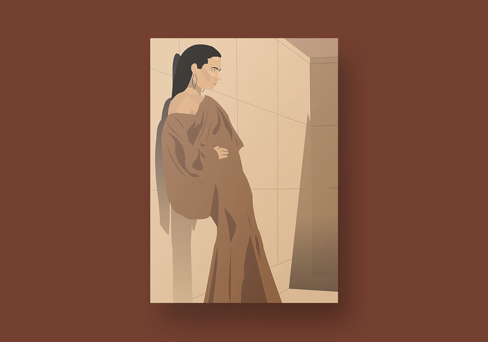

variations
digital illustration
For this piece, I was asked to create a drawing of a figure and apply various different color schemes to it. I created an image of a woman and recreated the image in a neutral, monochromatic, complementary, and analogous color scheme.